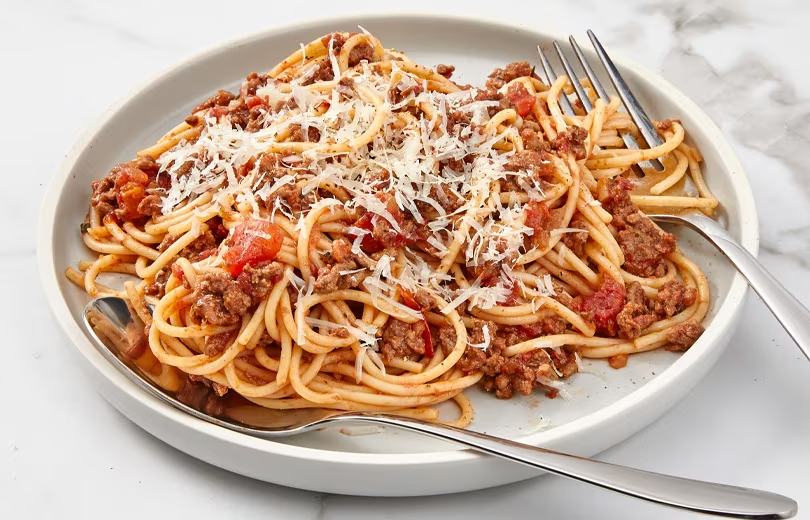

Beef Bolognese

Recipe tin eats recipeIngredients
- olive oil
- 2 brown onion, finely chopped
- 4 garlic cloves, crushed
- 1 carrot, peeled, finely chopped
- 1kg Beef Mince
- 4 x 400g cans crushed tomatoes
- 4 tbsp tomato paste
- 4 beef stock cubes in 1 cup of boiling water
- 1 tsp dried thyme
- 1 1/2 tsp salt
- 4 bay leaves
- 4 tsp white sugar (or any sweetner)
- Parmesan cheese to serve
Method
- Heat oil in a large saucepan over medium-high heat. Cook onion, carrot and garlic, stirring, for 5 minutes or until softened. Turn up to high and add mince. Cook, breaking up with a wooden spoon, for 6 to 8 minutes or until browned.
- Add the rest of the ingredients. Bring to the boil. Reduce heat to low. Simmer, uncovered, for 20 to 30 minutes or until thick.